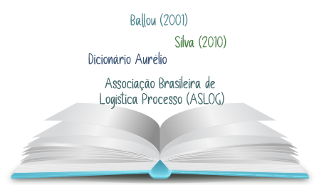

Silva (2010) sumariza algumas das principais definições de logística.
Clique nas palavras para conhecê-las.
BALLOU (2001)
Ballou (2001) define a logística como as atividades de movimentação e armazenagem que facilitam o fluxo de produtos, desde o ponto de aquisição da matéria-prima até o ponto de consumo final, assim como nos fluxos de informação que colocam os produtos em movimento, com o propósito de providenciar níveis de serviço adequados aos clientes a um custo razoável.
x
SILVA (2010)
Silva (2010) define a logística como parte da preparação da produção que cuida do planejamento, da obtenção, da alimentação dos processos e da distribuição dos produtos e serviços, como resultados finais aos clientes internos e externos.
x
DICIONÁRIO AURÉLIO
O Dicionário Aurélio define logística como um termo que se origina da palavra francesa logistique e que pode ser definida como “parte da arte da guerra que trata do planejamento e da realização de projeto e desenvolvimento, obtenção, armazenamento, transporte, distribuição, reparação, manutenção e evacuação de material.
x
ASSOCIAÇÃO BRASILEIRA DE LOGÍSTICA PROCESSO (ASLOG)
A Associação Brasileira de Logística Processo (ASLOG) define como a ação de planejar, implementar e controlar eficientemente, ao custo correto, o fluxo e a armazenagem de matéria-prima, estoque, durante a produção e produtos acabados, desde o ponto de origem até o consumidor final, visando atender aos requisitos do cliente.
x